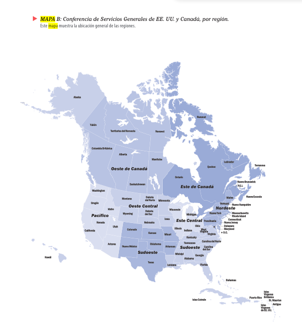
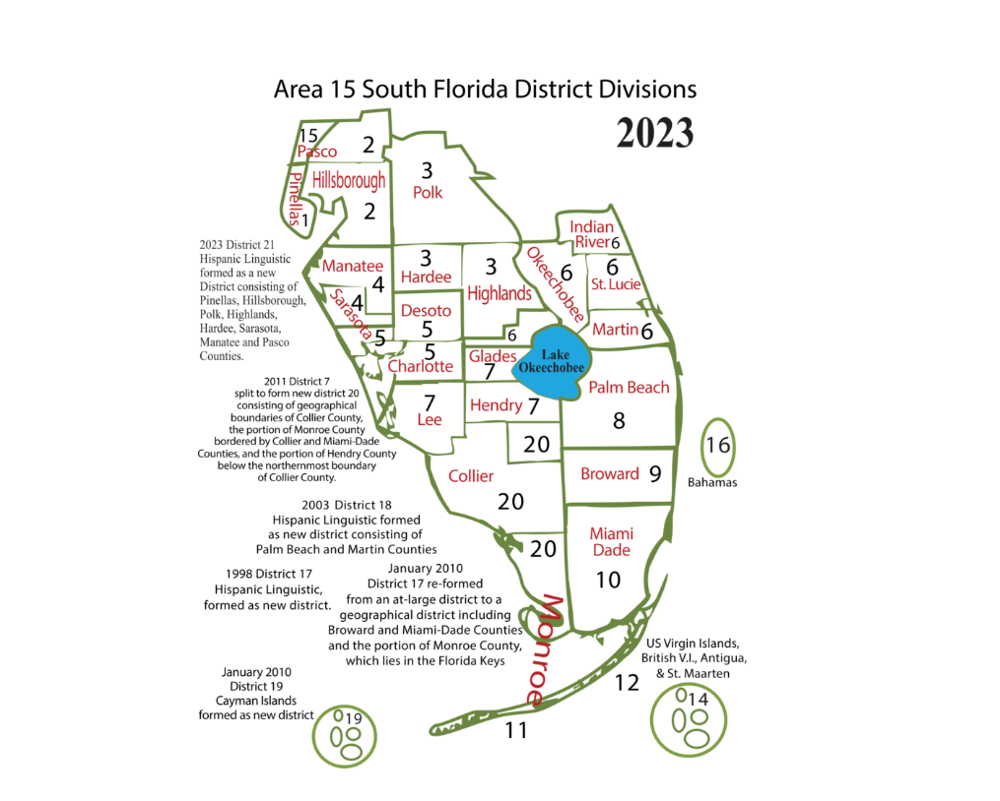
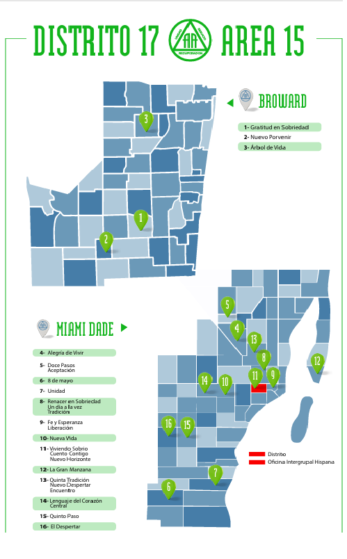

Mapas de Referencia
Haz clic sobre cualquier mapa para verlo en tamaño completo.
Conferencia de Servicios Generales

Distritos Área 15 - Florida Sur

Distrito Lingüístico Hispano

Distrito 17

Haz clic sobre cualquier mapa para verlo en tamaño completo.


